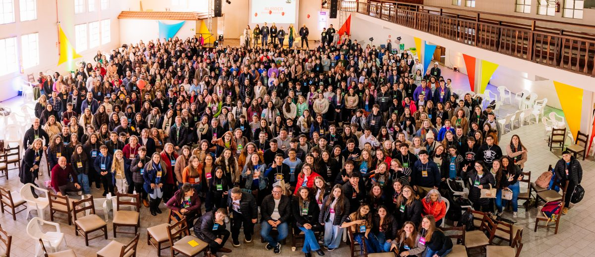
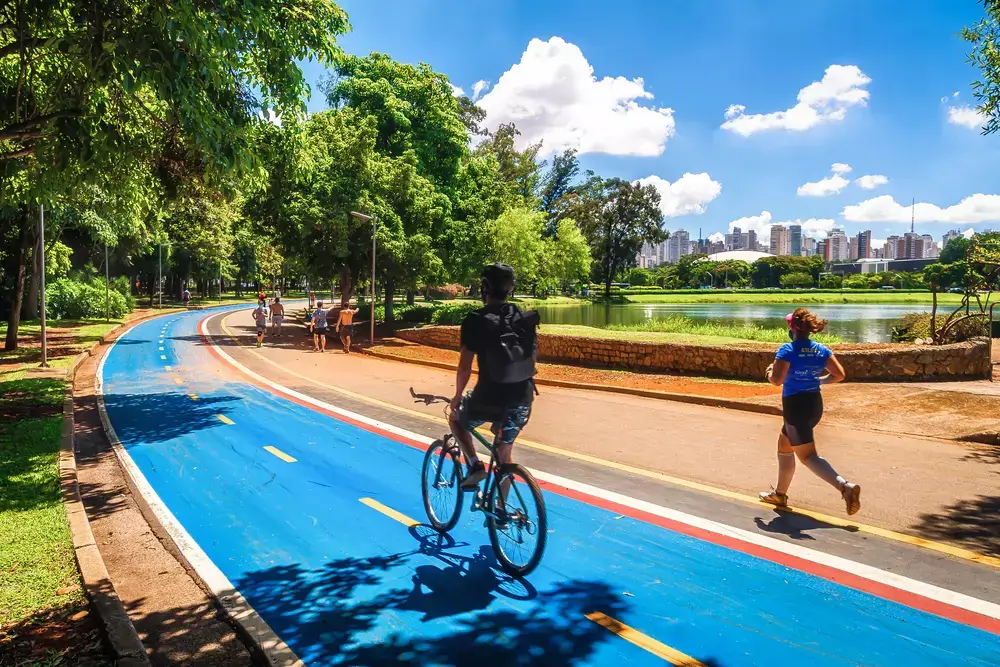

Seu portal de notícias sobre tecnologia e acontecimentos do dia.
Data atual:
Notícias de Tecnologia
Nova inteligência artificial auxilia estudantes
Data:
Ferramentas de inteligência artificial estão sendo usadas para ajudar estudantes em pesquisas, resumos e organização de conteúdo. O uso consciente dessas plataformas tem se tornado cada vez mais comum.
O uso responsável da inteligência artificial é essencial.
Computador representando o avanço da inteligência artificial.Leia mais
Além da educação, a inteligência artificial também está sendo aplicada em empresas, saúde e desenvolvimento de software, ampliando as possibilidades tecnológicas.
Desenvolvimento web cresce entre jovens
Data:
Muitos jovens estão estudando HTML, CSS e JavaScript para criar seus próprios sites e iniciar na área da tecnologia. O desenvolvimento web é uma das portas de entrada mais populares.
Aprender desenvolvimento web abre muitas oportunidades profissionais.
Tela com código representando o estudo de desenvolvimento web.Leia mais
Com dedicação e prática, estudantes conseguem montar portfólios, criar páginas pessoais e até trabalhar com criação de sites no futuro.
Notícias Gerais
Evento cultural reúne estudantes
Uma feira cultural escolar reuniu alunos de várias turmas para apresentar trabalhos, músicas e exposições. O evento foi um grande sucesso e contou com participação ativa da comunidade.
A integração entre escola e comunidade foi o destaque do evento.

Evento escolar com participação de estudantes e visitantes.
Prática de esportes melhora qualidade de vida
A prática de esportes tem ajudado muitas pessoas a melhorar sua saúde física e mental. Atividades simples, como caminhada e futebol, fazem diferença na rotina.
Manter o corpo em movimento é importante para a saúde.

Pessoas praticando esportes em um ambiente aberto.